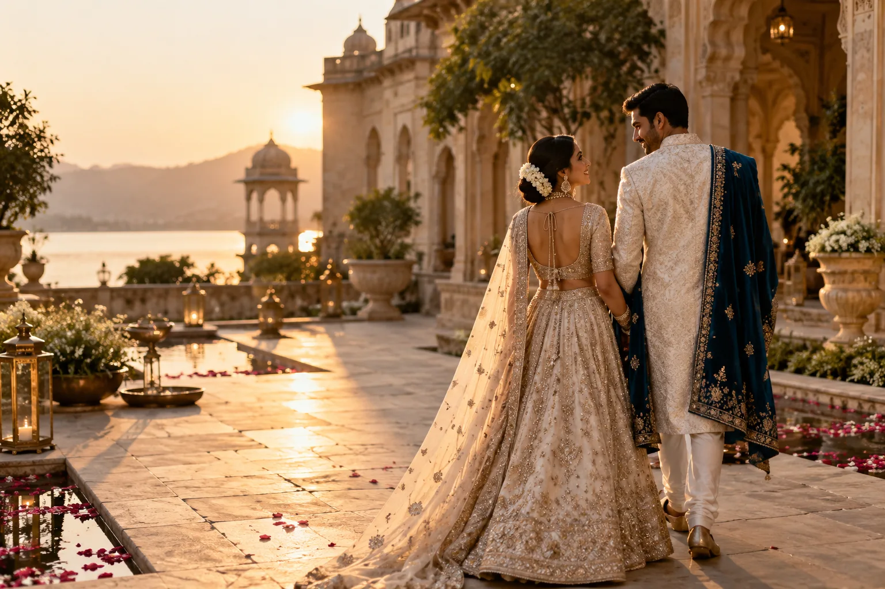

Photography · Cinematography · Bengaluru
Stories felt deeply. Frames kept forever.
Natural photographs and cinematic films shaped around the people, places and moments that matter to you.
Crafted around your story
The honest moments are the ones worth returning to.
Crafted Media documents weddings, celebrations and brand stories with a calm, observant approach. We look for real emotion, thoughtful composition and the fleeting details that make a day entirely yours.
Our photography feels natural. Our films move with intention. Every final frame is edited to remain timeless long after the moment has passed.
Meet Crafted MediaFeatured wedding story
A quiet promise, held between celebrations.
Beyond the colour and movement, a wedding is made of quieter things: a steady hand, a familiar glance, a breath before the next ritual. Those are the moments we stay ready for.
Explore wedding storiesSelected work
Stories of people, occasions and purpose.
A curated entry into the work we create most—each with its own pace, atmosphere and visual language.
The Crafted experience
Thoughtful from the first conversation.
- 01
Listen first
We begin with your plans, priorities and the people at the heart of the story.
- 02
Plan with care
Timelines, locations and visual details are considered so the day can feel effortless.
- 03
Create naturally
On the day, we offer calm direction while leaving space for honest moments to happen.
Kind words
The experience matters as much as the images.
Client stories and verified testimonials will be introduced here as the Crafted Media collection grows.
Testimonials previewPlanning something meaningful?
Tell us what you’re imagining.
Share your date, place and the kind of story you want to remember.